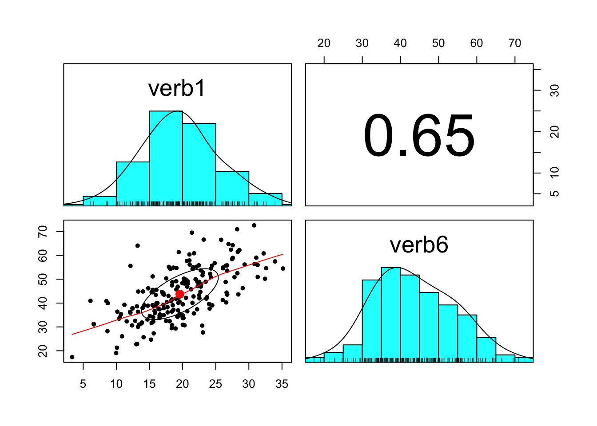
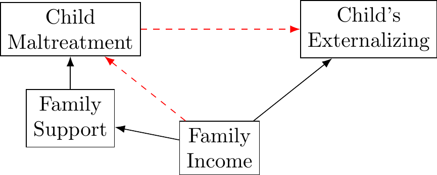
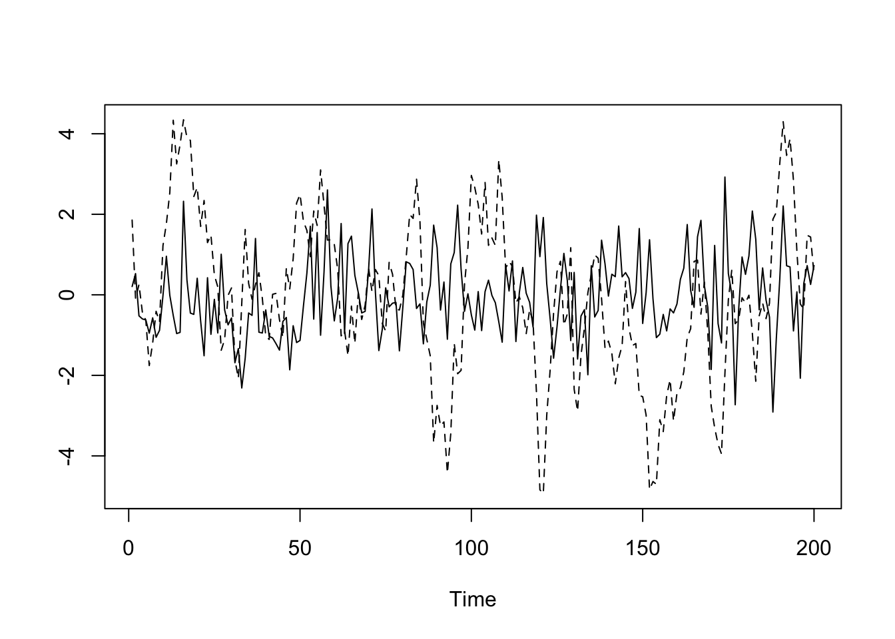
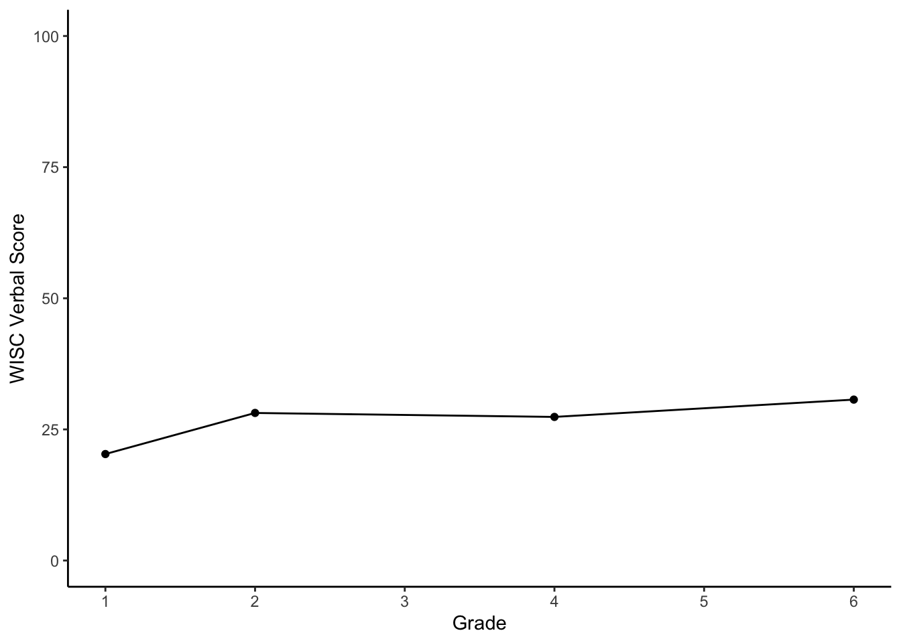
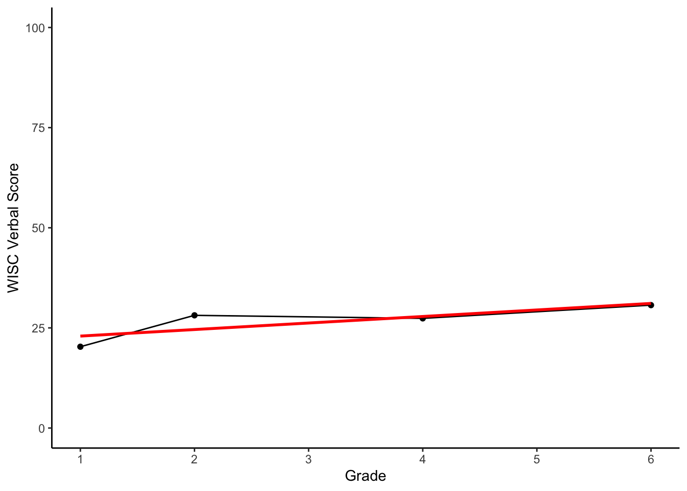

5.9 Statistical Control
Randomized experiments often considered the gold standard in scientific research.However, it is often infeasible, difficult or impossible to manipulate the putative effect of interest:
- cannot randomly resettle individuals into different strata of society
- cannot assign couples to stay married or get a divorce
- cannot randomize children to different levels of adversity
Researchers have employed a number of different strategies in response to the limitations of observational data:
- surrogate interventions
- item the real-life cause of interest cannot be manipulated, often a proxy can be randomized in the lab.
- avoiding causal language
- item write about associations and relationships despite substantive question about causal effects
- statistical control
- include control variables in analysis but choice of variables often difficult and statistical control itself insufficient
5.9.1 Directed Acyclic Graphs (DAGs)
Directed acyclic graphs (DAGs) are another approach that can be used to examine causal inferences from observational data.
- They were developed primarily by the computer scientist Judea Pearl
- DAGs provide a visual representation of causal assumptions.
- Some overlap with structural equation models (SEMs).
Importantly, DAGs can provide insights on
- What variables should be controlled for?
- What variables should not be controlled for?
- In what situations might control worsen causal inference?
5.9.2 Introduction to DAGs
Below is a simple DAG depicting a model in which the relationship between maltreatment externalizing is confounded by a common cause, income.
DAGs consist of nodes (variables) and arrows (edges) between these nodes, which reflect causal relationships.
It is assumed that manipulation of a variable at which an arrow begins (e.g., a manipulation of child maltreatment with income held constant) would change the variable at the end of the arrow (e.g., externalizing).
5.9.3 Introduction to DAGs: Paths
From these two simple building blocks—nodes and arrows—one can visualize more complex situations and trace paths from variable to variable:

Paths
- A simple path leads just from one node to another (income → stress).
- Paths can also contain multiple nodes:
- income → stress → child maltreatment
- Paths can also travel against the direction indicated by arrows
- child maltreatment ← stress ← income → externalizing
5.9.4 Introduction to DAGs: Chains

Chains
- Chains have the structure A → B → C.
- Chains can transmit an association between the beginning and end nodes.
- If income causally affects child maltreatment, and child maltreatment causally affects externalizing, then income and externalizing can be correlated.
5.9.5 Introduction to DAGs: Descendants and Ancestors
Chains: Descendants and Ancestors
- Along a chain, variables that are directly or indirectly causally affected by a certain variable are called its descendants
- externalizing is a descendant of child maltreatment
- Variables that directly or indirectly affect a certain variable are considered its ancestors.
- income is an ancestor of support, child maltreatment and internalizing
5.9.6 Introduction to DAGs: Forks
Forks
- Forks have the structure A ← B → C.
- A fork can transmit an association, but it is not causal.
- In isolation, this fork indicates that child maltreatment and externalizing may be correlated because they share a common cause, income.
- Forks are the causal structure most relevant for the phenomenon of confounding.
5.9.7 Introduction to DAGs: Inverted Forks

Inverted Forks
- Inverted forks have the structure A → B ← C.
- An inverted fork does not transmit an association.
- In isolation, If child maltreatment and income both affect externalizing, this does not imply that they are in any way correlated.
- Inverted forks are relevant to the problem of collider bias.
5.9.8 Introduction to DAGs: Inverted Forks

Acyclicity
- DAGs are acyclic because they do not allow for cyclic paths in which variables become their own ancestors.
- a variable cannot causally affect itself
- Developmental systems often contain feedback loops and reciprocal relationships.
- Often feedback loops can be modeled in a DAG by taking the temporal order into account and adding nodes for repeated measures.
5.9.9 Statistical Control Done Right
The central problem of observational data is confounding:
- the presence of a common cause that lurks behind the potential cause of interest and the outcome of interest.
A confounding influence can introduce what is often called a spurious correlation, which ought not to be confused with a causal effect.
- The extraordinarily influence of randomized experiments in testing causal inferences is based on the simple fact that if the independent variable is randomly assigned—for example, by the flip of a coin—by design it cannot share a common cause with the outcome.
How can a DAG be used to figure out how to remove all such noncausal associations so that only the true causal effect remains?
5.9.10 Building a DAG
To derive a valid causal conclusion, one must ensure the DAG includes everything that is relevant to the causal effect of interest. What is missing

If we want to derive a valid causal conclusion, we need to build a causal DAG that is complete because it includes all common causes of all pairs of variables that are already included in the DAG (Spirtes, Glymour, & Scheines, 2000).
That is, any additional variable that either directly or indirectly causally affects at least two variables already included in the DAG should be included.
5.9.11 Building a DAG: Back-Door Paths
After a DAG is built, back-door paths can be discerned.
Back-door paths are all paths that start with an arrow pointing to the independent variable and end with an arrow pointing to the dependent variable.

If we plan to investigate the causal relationship between child maltreatment and internalizing what are the back-door paths in our example DAG?
Back-Door Paths * child maltreatment ← support ← income → externalizing * child maltreatment ← income → externalizing
Back-Door Problems
- Back-door paths are problematic whenever they transmit an association.
- In this case, both backdoor paths consist of only chains and forks, thus, these two back-door paths are open, and they can transmit a spurious association.
Back-Door Solutions
- The zero-order correlation between child maltreatment and externalizing is a mix of the true causal effect (child maltreatment → externalizing) of interest plus any noncausal association transmitted by the two back-door paths.
- To remove the undesirable noncausal association, we must block the two back-door paths.
Blocking Back-Door Paths
The purpose of third-variable control is to block open back-door paths.
If all back-door paths between the independent and dependent variables can be blocked, then the causal effect connecting the independent and dependent variables can be identified.
Such a causal effect would be considered identifiable, always under the assumption that the DAG captures the true underlying causal web.
A back-door path can be blocked by “cutting” the transmission of association at any point in the path by statistically controlling a node.
What variables would we want to control for to identify the causal effect of child maltreatment on externalizing?